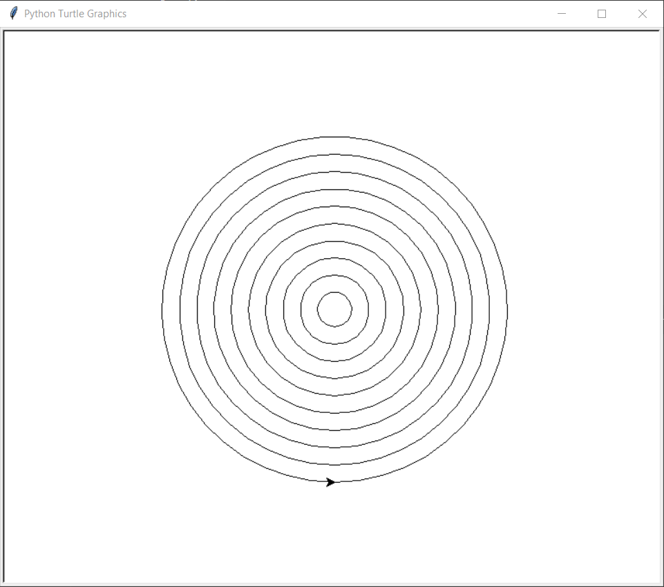

Turtles#
I Python finns en inbyggd modul som heter turtle vilket låter användaren skapa en simpel grafik. Skölpaddan kan rita och fylla i figurer med olika färger.
Skapa en turtle#
För att börja med turtle-modulen behöver vi börja med att skriva följande.
import turtle
Vi behöver importera turle modulen för att koden ska få åtkomst till alla funktioner och metoder som finns inbyggt i modulen. Efter vi har gjort det kan vi börja med att skapa en turtle. Skriv följande kod:
t = turtle.Turtle()
Nu har vi skapat skölpaddan och varje gång vi vill att skölpaddan ska göra någonting så hänvisar vi till skölpaddan genom variabeln t.
Börja rita#
Nu när vi har skapat skölpaddan kan vi beordra den att göra olika saker. En metod är en funktion som är kopplad till ett speciellt objekt (skolpaddan i det här fallet). För att använda en metod använder man punktnotation. Precis som när vi använde olika metoder för listor som t.ex .append().
Vi börjar med ett lätt exempel, inkludera koden ovan och kopiera även in detta:
t.forward(100)
t.left(90)
t.forward(100)
t.circle(100)
turtle.exitonclick()
Titta vad koden gör och försök klura ut vad de separata metoderna gör för skölpaddan. Genom att titta flera gånger och att försöka förklara för sig själv kan man förstå mycket mer av koden.
Koden turtle.exitonclick() gör att fönstret där bilden ritas inte försvinner direkt när skölpaddan är klar, utan försvinner när man stänger ner fönstret.
Viktiga metoder för att rita med turtles#
Nedan listas de viktigaste metoderna när det kommer till turtle-modulen som är bra att använda.
Metod |
Betydelse |
|---|---|
|
Skölpaddan rör sig rakt fram lika långt som |
|
Skölpaddan svänger åt vänster |
|
Ändrar färgen för pennans färg och färgen som man vill fylla i med. |
|
Börjar att fylla i färgen. |
|
Avslutar att fylla i färgen. |
|
Går till x-koordinaten |
|
Skapar en cirkel med radien |
|
Sätter ner pennan och börjar rita. |
|
Tar upp pennan och slutar rita. |
|
Gömmer skölpaddan osynlig. |
|
Gör skölpaddan synlig. |
|
Tar bort allting som har ritats. |
Övningar till avsnittet#
Övning 4.1#
Skapa ett program som ritar en kvadrat med sidlängden 100. Gör koden först utan en for-loop och sedan med en for-loop.
Tips
Använd metoderna med t.forward(längd), t.left() och en for-loop som upprepar koden för varje sida av kvadraten.
Övning 4.2#
Använd koden från övning 4.1 och förbättra den så att kvadratens sidor är ritade med färgen 'blue' och fyll i kvadraten med färgen 'lightblue'.
Tips
Använd metoderna med t.color(penfärg, fyllnadsfärg) för att välja färg samt metoderna t.begin_fill() och t.end_fill() för att fylla i färgerna.
Övning 4.3#
Skapa ett program som frågar om en sidlängd och sedan ritar en liksidig triangel med den angivna sidlängden.
Tips
Deklarera en variabel som använder input-funktionen för att lagra vilken sidlängd som triangeln ska ha. Använd metoderna med t.forward(längd), t.left() och en for-loop som upprepar koden för varje sida av triangeln. Tänk på hur många grader varje vinkel har i en liksidig triangel.
Övning 4.4#
Använd koden från övning 4.3 och förbättra den så att triangelns sidor är ritade med en färg som användaren användaren anger, låt även användaren ange med vilken färg som triangeln ska fyllas i med.
Tips
Deklarera två variabel som använder input-funktionen för att lagra vilken färg som triangeln ska ritas och fyllas i med. Använd metoderna med t.color(penfärg, fyllnadsfärg) för att välja färg samt metoderna t.begin_fill() och t.end_fill() för att fylla i färgerna.
Övning 4.5#
Skapa ett program som ritar en cirkel med radien 20, 40, 60, osv upp till 200. Gör så att cirklarna är placerade innanför den andra. Bilden nedan visar hur resultatet ska se ut.
{kind=link}
Tips
Skapa en for-loop som använder range-funkionen för att skapa alla radier som krävs av cirklarna. I for-loopen ritas cirklarna med hjälp av metoden t.circle(radie). Det är viktigt att for-loopen även inkluderar var skölpaddan ska börja med att rita cirkeln. Använd t.penup() och t.pendown() och ´t.goto(x, y)` i början av for-loopen för att få skölpaddan att börja rita på rätt ställe.
Övning 4.6#
Skapa ett program som ritar ett rektangulärt hus med ett triangulärt tak.

Tips
Börja med att skapa basen till huset genom att göra en forloop som skapar husets bas, sedan skapa en annan loop för taket som är triangulärt.
Övning 4.7#
Rita 5 cirklar i olika färger bredvid varandra. Bilden nedan visar hur resultatet kan se ut.

Tips
Börja med att deklarera en lista med alla färger. Skapa sedan en for-loop som går igenom alla färger, skapa en cirkel för varje gång loppen uppdateras.
Övning 4.8#
Skapa en spiral. Bilden nedan visar hur resultatet kan se ut.

Tips
Börja med att deklarera en längd som sprialen ska börja med, gör det här värdet lågt. För varje gång som loopen uppdateras se till att göra sträcket längre. längd += 1 Skapa en for-loop som använder range-funkionen som upprepar för varje streck som ska ritas.